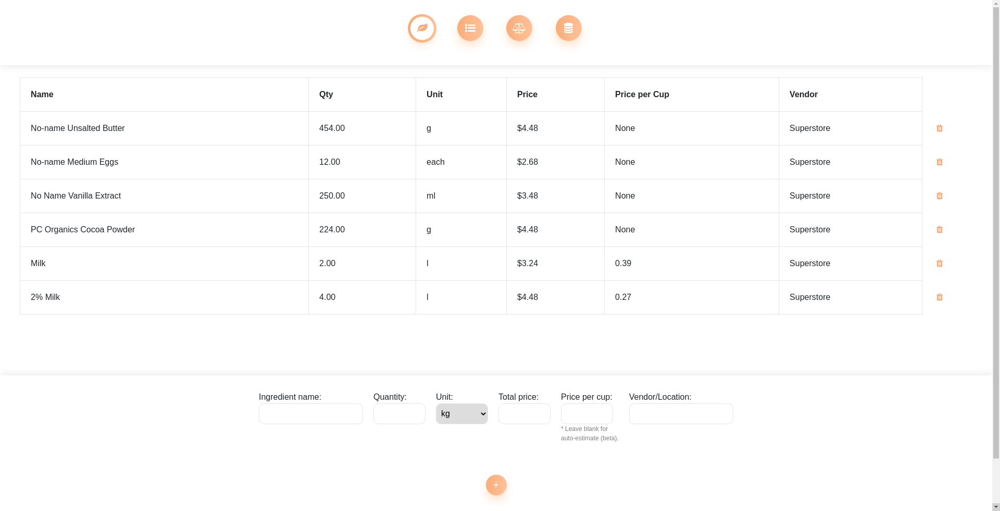
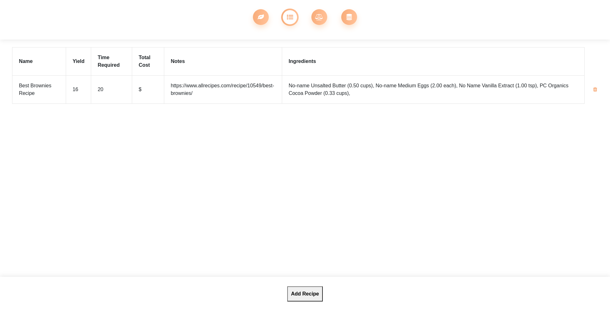
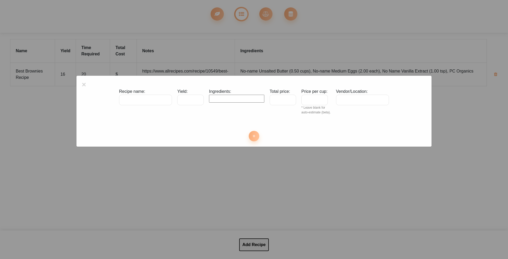

I am a software developer (and student) from Winnipeg, Manitoba.
Find me on GitHub
Note: This project is a work in progress. Many things in this application are unfinished; in the code, as well as in the appearance of the project. Anything that looks out of place, is likely a placeholder for something more polished.
This project expanded my knowledge of many topics. First of all, I learned how to work with a database using Django. Since I didn't know python, let alone Django, I worked hard to learn the language as quickly as possible, then followed the documentation of Django to get started. I learned a lot about Object Relational Mapping, as well as how HTML/CSS interacts with database elements. I am continuing to learn about networking concepts, such as requests, web-hosting, and other back-end essentials.
The idea behind this web application is to organize and estimate recipes and their prices. It allows the user to enter ingredients and their prices in order to localize the cost to their preferred vendor. It automatically estimates the price per cup if the user doesn't fill out that input.
It also allows for recipes to be stored and viewed, which will be useful later when I implement a scaling system which scales price (and time required, potentially). This system will be used for catering or meal prepping.
I am currently working on the form used to add a new recipe. The modal pop-up works well, but I am still learning how to add a new set of form inputs when the user adds an ingredient and amount so the user can add multiple ingredients and amounts as they please.
Currently, the user can choose an ingredient from the list of ingredients in the database (the input has an auto-fill dropdown). The idea is that they choose the ingredient and the quantity of that ingredient used in this recipe. At that point, a scaled ingredient object is created, which then scales the price based on the original price and price per cup. This object is added to the recipe object, which uses the added scaled ingredients to calculate the recipe price. At that point, the user would be able to compile a list of recipes for a catering event or something similar and could estimate costs and time required.